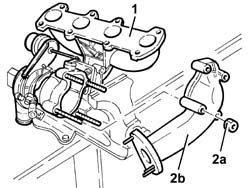
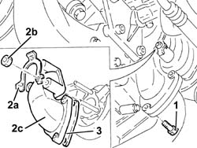

1064A50 sleeve joining turbo charger and exhaust pipe - r + r and replace seal
- Path
- Procedures > 10 ENGINE > 1064 ENGINE TURBOCHARGING SYSTEM > 1064A turbo charger assembly > 1064A50 sleeve joining turbo charger and exhaust pipe - r + r and replace seal
- Kind
- repair procedure (removal / refitting; the operation number is the code)
- Applies to
- engines: 1.9 JTD 8v , 2.4 JTD 10v; all production periods
- Interactive page
- https://sloeber94.github.io/elrnDB-a156/en/#/3237831
Applies to: engines: 1.9 JTD 8v ; all production periods
 Removing
Removing
 Refitting
Refitting1064A19 TURBOCHARGER - EXHAUST MANIFOLD - EXHAUST PIPE CONNECTING HOSE - R.R.
1. Position the turbocharger assembly in a vice.
2. Unscrew nuts (2a) and remove exhaust pipe coupling sleeve (2b).

Applies to: engines: 1.9 JTD 8v ; all production periods
Refitting
RemovingFit the sleeve for connection to the exhaust pipe and secure to the turbocharger by tightening the nuts to the specified torque.
 | Fastening | Component | Ø | Value (daNm) |
|---|---|---|---|---|
- | Nut | SLEEVE TO EXHAUST PIPE | M8 | 2.1 - 2.6 |
Remove the turbocharger assembly from the vice.
1064A19 TURBOCHARGER - EXHAUST MANIFOLD - EXHAUST PIPE CONNECTING HOSE - R.R.
Applies to: engines: 2.4 JTD 10v; all production periods
Removing
RefittingPosition the vehicle on the ramp.
Raise the vehicle.
1. Unscrew the bolts securing the sleeve connecting the turbocharger and exhaust pipe on the exhaust pipe side.
2. Straighten the edges of safety collar (2a), undo nuts (2b) and remove the sleeve connecting the turbocharger and exhaust pipe (2c).
3. Remove the seal.

Applies to: engines: 2.4 JTD 10v; all production periods
Refitting
RemovingFit the sleeve connecting the turbocharger and the exhaust pipe.
Fit the safety collar and tighten the nuts securing the sleeve connecting the turbocharger and exhaust pipe on the turbocharger side.
Fit a new gasket and tighten the bolts securing the sleeve between turbocharger and exhaust pipe, exhaust pipe side, to the specified torque.
| Fastening | Component | Ø | Value (daNm) |
|---|---|---|---|---|
- | Bolt | SLEEVE TO EXHAUST PIPE | M8 | 2.0 - 2.5 |
Lower the vehicle.
Remove the car from the ramp.